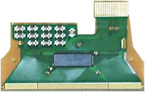

|
Chip-on-Flex
(COF)
Chip-on-Flex,
or
COF,
refers to the
semiconductor assembly technology wherein the microchip or die is
directly
mounted on and electrically connected to
a flexible circuit (a circuit built on a flexible substrate instead of
the usual printed circuit board). Thus, in a COF assembly, the microchip
doesn't have to go through all the traditional assembly steps required
for individual IC packaging. This simplifies the over-all process of
designing and manufacturing the final product while improving its
performance as a result of the shorter interconnection paths.

Figure 1.
Example of a
Chip-on-Flex (COF) Assembly
The general
term for COF technology is
'direct chip attachment',
or
DCA.
Aside from the flexible circuit substrates used for COF's, various
substrates
are available for use in DCA. DCA assemblies are often named based
on the substrates used, e.g., chip-on-glass (COG) for glass ceramic
substrates, chip-on-board (COB) for printed
circuit boards, chip-on-flex (COF) for flex substrates, etc.
Advantages
provided by COF technology include: 1) space savings; 2)
reduced weight; 3) lower production cost; 4) thermal durability
and higher reliability from
better heat distribution; 5) shorter
time-to-market; and of course, 6) geometrical and mechanical
flexibility.
Because of
its high bending strength, COF is very useful in device assembly
processes that require bending or folding steps. It is also used
in assemblies that require repeated movements such as printers.
The substrate
material used for a flex circuit depends on the actual application.
Substrates used in COF include flexible reinforced boards, rigid
flexible boards, and semi-flexible boards.
As in most
DCA technologies, COF assembly has only 3 main steps: 1)
die attach, or the accurate attachment of
the chip to the flexible substrate; 2) wire
bonding, or the electrical connection of the chip to the flex
circuit using very fine bonding wires; and 3) encapsulation of the chip
and wires with a special compound to protect them from the environment.
The chip is
attached to the flex substrate using adhesives that can either be
conducting or insulating, depending on the device requirement.
Aside from providing mechanical stability and electrical conduction (or
insulation) to the chip, these die attach adhesives also provide thermal
paths by which the heat generated by the device during operation can be
released more efficiently.
Wires used
for wire bonding COF assemblies are most often either aluminum or gold
alloys. The diameter of these wires typically ranges from 22 to 25
microns and should not be less than 15 microns. The traditional
ultrasonic and thermosonic wire bonding techniques used in IC packaging
are also applicable to COF wire bonding. See:
Wirebonding.
The compound
used in encapsulating the chip on flex to protect it from environmental
factors is an epoxy resin whose viscosity, coefficient of thermal
expansion, and amount of dispensation are determined by the
characteristics of the flexible substrate and the COF itself.
See Also:
Chip-on-Board (COB);
Die Attach;
Wirebonding;
Molding; TAB Assembly;
Flip Chip;
IC
Manufacturing;
Assembly Equipment
HOME
Copyright
©
2007
www.EESemi.com.
All Rights Reserved.
|